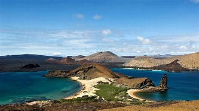
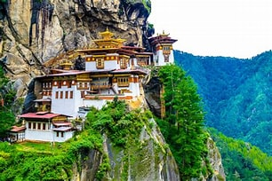

Our Eco-Friendly Tours
Experience the beauty of our planet while preserving it for future generations. Our tours combine adventure, cultural immersion, and environmental responsibility.
Costa Rica Rainforest Expedition

Duration: 10 days
Activity Level: Moderate
Explore the diverse ecosystems of Costa Rica, from misty cloud forests to pristine beaches. Stay in eco-lodges, spot wildlife, and participate in local conservation projects.
New Zealand Wilderness Trek

Duration: 14 days
Activity Level: Challenging
Hike through the stunning landscapes of New Zealand, from alpine meadows to coastal trails. Learn about indigenous Maori culture and the country's conservation success stories.
Iceland Renewable Energy Tour

Duration: 8 days
Activity Level: Easy to Moderate
Discover how Iceland harnesses geothermal and hydroelectric power while exploring its dramatic landscapes. See geysers, waterfalls, and the Northern Lights (seasonal).
Thailand Cultural Immersion

Duration: 12 days
Activity Level: Easy
Experience the rich culture and natural beauty of Thailand. Stay in community-based lodgings, learn traditional crafts, and support marine conservation efforts.
Galápagos Wildlife Expedition
Duration: 9 days
Activity Level: Moderate
Explore the islands that inspired Darwin's theory of evolution. Observe unique wildlife up close while learning about ongoing conservation efforts.
Bhutan Happiness Kingdom
Duration: 11 days
Activity Level: Moderate
Visit the world's only carbon-negative country. Trek through pristine forests, visit ancient monasteries, and learn about Bhutan's unique approach to development.
Our Tour Sustainability Commitment
Every Eco Travel Adventures tour includes:
- Carbon offset for all transportation
- Stays in locally-owned, eco-certified accommodations
- Support for local conservation initiatives
- Small group sizes to minimize environmental impact
- Educational components on local ecology and conservation
- Water refill stations to eliminate single-use plastic